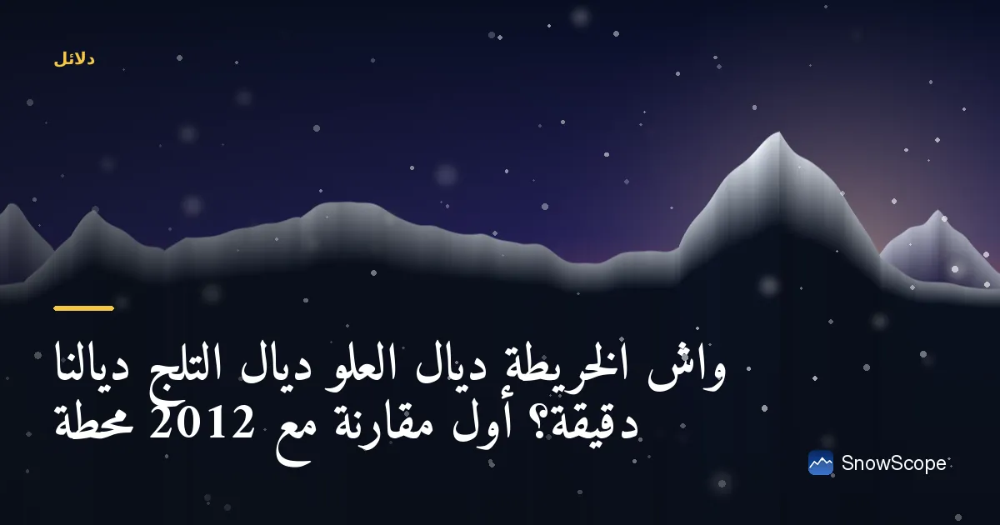

واش الخريطة ديال العلو ديال التلج ديالنا دقيقة؟ أول مقارنة مع 2012 محطة
خريطة التلج كتساعد الزلاجين غير إذا الأرقام كانت صريحة. حنا دابا كنفقدو كل يوم ضد القياسات الحقيقية ديال المحطات فـ جبال الألب، جبال البيرينيه و أمريكا الشمالية، و كنشرو النتايج. هادا هو اول سكور من 9 نونبر 2026.
شوف توقعات التلج مباشرة ديال Alps فالتطبيق ديال SnowScopeالعلو ديال التلج، التنبيهات والخريطة 3D، فابور.
دقة عامة: أول بطاقة درجات
فـ 9 نونبر، SnowScope قارنات خريطتها مع 2,012 محطة اللي بلاغت العلو ديال التلج (البيانات جات من 2,516 محطة فـ 16 شبكات). الخريطة كانت 0.5 سم ضحلة بـ المتوسط. الغلط المتوسط كان 7.7 سم، و الخريطة ورات التلج و لا ما التلج (5 سم أو أكثر) صحيح 88% ديال الوقت.
أول نونبر كيخلي شي حاجات أسهل: بزاف محطات جبلية ما عندهاش التلج بحال، و الخريطة كتوافق معاها. لاكن فـ 780 محطة فين الوحدة أو الخريطة ورات التلج، الحكاية كانت أصعب. الغلط المتوسط هناك كان 12.4 سم، مع الخريطة تديرها 1.3 سم ضحلة و كل موقع بدل حوالي 3.3 سم من التوقعات.
ثلاث جهات، ثلاث حكايات
الغرب ديال أمريكا (1,063 محطة SNOTEL و غيرهم) كان أحسن توافق: 0.1 سم انحراف، 4.6 سم غلط متوسط، 89% توافق على التلج أو ما التلج. جبال الألب (917 محطة) عندها 1.1 سم انحراف ضحل و 10.3 سم غلط متوسط، مع 86% توافق. جبال البيرينيه لسة صغيرة: غير 14 محطة بلاغة لحد الآن، مع 3.0 سم غلط متوسط.
واحد الموقع فـ جبال الألب كيخلع الأرقام: نهر جليدي فـ 3,499 م قاس 320 سم بينما الخريطة تري 28 سم. النهر الجليدي كيحتفظ بـ التلج القديم و الجليد اللي خريطة التلج الموسمية خاصها تهملهم، فـ حنا كنشيرو هاد الحالات الغريبة بدل ما نتبعوهم فـ التوقعات.
فين الخريطة لسة كتعاني
التلج الرقيق أول الموسم كيكون صعب. إذا محطة قاست التلج، الخريطة لقات التلج غير 61% ديال الوقت. إذا الخريطة قالت التلج، 23% ديال هاد المحطات بلاغو ما فيهاش التلج. شي سنتيمترات متفرقة فـ جنبة ديال جبل فـ 500 م الدقة هي أول مشكلة كنفتشو فيها.
الشتوات الدافيّة كاتلقحنا هاد الأسبوع. خريطتنا كانت كتدير الشتا فـ التلج إذا الهوا كان بارد بـ المقدار حيت تجمد. فـ 12 نونبر فـ جنوب جبال الألب فـ 2,300 م، هاد الغلط معناه التنبؤ بـ 2.7 سم ديال التلج الجديد إذ الحقيقة كانت 0.1 سم. الخبر الحسن: التلج الجديد فـ 24 ساعة لسة كيتسجل زيين، مع غلط متوسط ديال غير 1.0 سم فـ 1,890 محطة.
واش هاد الأرقام كيهمونا—و حديتهم
هاد الفحص كيقولك فاشنو الخريطة الكاملة كتطابق القياسات، لا اختبار مستقل. نفس المحطات كتساعد فـ بناء الخريطة، فـ هادي فحص تطابق نهائي، لا نبوءة عمياء. كنا دابا كنخطط اختبار منفصل باستعمال محطات مرفوضة.
محطة واحدة كتوري موقع واحد فقط؛ الخريطة كتعمل متوسط ديال مربعات 500 م. التلج كيتبدل بـ شكل حاد فـ شي مائية متر لأن الريح، حماية الغابة و تعريض الشمس. الفرق بين نقطة و منطقة حقيقي، لا غلط كنقدرو نصلحو. كنا كنشتغلو على شبكة 100 م حيت نضييقو، و كنا كنزيدو 'نطاق محتمل' حيت تعرف إذا الخريطة ما كتأكد بـ الشكل ديال اليقين.
واش كتشوفو جاي
هاد الفحص دابا كيشتغل مرتين كل يوم و كيحفظ تاريخ، فـ كتشوف الأرقام كتبدل فـ طول الموسم ديال الشتا. بـ الربيع كتشوفو فاشنو الخريطة كتشتغل على التلج العميق، الضاريس الحاد و الطقس كيتبدل.
جاي قريب: خريطة أحد و أحد 100 م، محطات أكثر فـ إسبانيا و النرويج، قانون أذكى لـ التلج الرقيق و المتفرق فـ الارتفاعات المنخفضة، و نطاق نبوءة حول كل قيمة علو حيت تعرف فاشنو المخطط مؤكد.
نصايح للي كيتزلجو
- استعمل الخريطة بـ حيت تقارن بين الجنابات المختلفة و الارتفاعات فـ المحطة ديالك بدل ما تثق فـ نقطة واحدة فقط. تفقد تقرير التلج ديال المحطة بـ راسهم قبل ما تروح.
- شغل الطبقة 'التلج المقاس' فـ التطبيق بـ حيت تشوف فين المحطات الحقيقية و فاشنو كتقارن مع الخريطة ديالك.
- أول الموسم، صدق على البيسطات العالية الشمالية أولا. تتوقع التلج الرقيق أو المتفرق تحت، خاصة فـ الوديان و على الضاريس الجنوبية.
على هاد الأرقام
العلو ديال التلج فالمحطات هو أكثر تلج فالجهة الفوقانية فالتاريخ المكتوب؛ هادو تقديرات لمنطقة، ماشي قياس فنقطة وحدة. التوقعات يمكن تتبدل. ديما شوف النشرة الرسمية ديال الانهيارات قبل ما تخرج من البيست.
كيفاش تستاشهد بهاد المقال
للبحث، التعليم ولا الصحافة: الأرقام والرسومات تقدر تعاود تخدم بيهم بحرية تحت CC BY 4.0 مع هاد الاستشهاد.
SnowScope (2026), واش الخريطة ديال العلو ديال التلج ديالنا دقيقة؟ أول مقارنة مع 2012 محطة, https://snowscope.app/blog/ar/2026/11/how-accurate-is-our-snow-depth-map-november-2026.html, تشاف ف 2026-11-09
SnowScope (Atlas Labs). (2026, November 9). واش الخريطة ديال العلو ديال التلج ديالنا دقيقة؟ أول مقارنة مع 2012 محطة. SnowScope snow reports. https://snowscope.app/blog/ar/2026/11/how-accurate-is-our-snow-depth-map-november-2026.html
BibTeX
@misc{snowscope2026howaccurateisoursnowdept,
author = {{SnowScope (Atlas Labs)}},
title = {واش الخريطة ديال العلو ديال التلج ديالنا دقيقة؟ أول مقارنة مع 2012 محطة},
year = {2026},
month = nov,
howpublished = {\url{https://snowscope.app/blog/ar/2026/11/how-accurate-is-our-snow-depth-map-november-2026.html}},
note = {Published 2026-11-09 19:55 UTC; accessed 2026-11-09}
}· CC BY 4.0 · الطريقة، الداتا والأدوات →
تابع Alps
فابور: ميساج ملي يجي التلج، والتوقعات كل صباح.